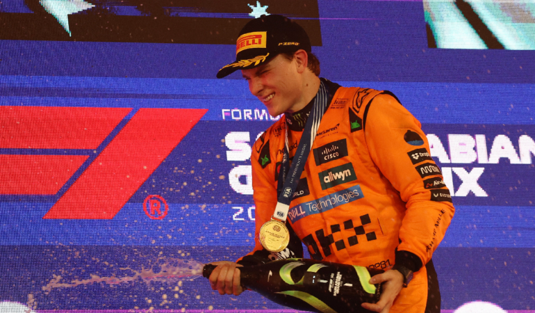

20 de abr, 2025, 15:26
El australiano mostró su templanza, venció en velocísimo callejero de Jeddah y potenció sus acciones para lugar por el título. Max Vestappen fue segundo y Charles Leclerc completó el podio. Lando Norris escaló hasta el cuarto puesto.